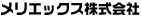

ビル清掃 オフィス清掃 マンション清掃 メリエックス株式会社



〒124-0022
東京都葛飾区奥戸2-8-15
TEL : 03-3693-7502
FAX : 03-3696-5140

建設CAD


改正建築基準法と住宅・建設事業者における今後の経営課題
２００７年６月２０日より施行となりました改正基準法では、確認審査や中間・完了検査の厳格化が行われ、着工の遅れや申請手数料の面で業界に大きな波紋を投げかけました。
また、２００８年１２月までには４号建築物特例廃止の動きによって確認申請時に伏図、壁量計算、構造詳細図等の添付が必要になるとも言われております。
２００９年秋にスタートする瑕疵保証の義務化※含め、これからの住宅生産・販売においては、品質確保に向けた申請図書作成業務と検査の合理化をテーマとした業務フローを大幅に見直すときが間近にせまってきています。


柔軟なデータ対応で作業効率の向上を支援する見積書/実行予算書作成システム
「PImacsJr.」は分かりやすいインターフェースの採用により、誰にでも簡単に見積書/実行予算書を作成することができます。 お使い頂きながらマスター構築が可能なシステムを採用。使うほどに「正確で簡単」なシステムとなります。 柔軟なデータ対応により現在お持ちのデータを有効活用することができる為、スムーズなシステム導入が可能です。

リフォーム会社様向けの業務管理システム
「PImacsReFORM」は、現在大手住宅メーカーや地場ビルダーを中心に幅広く全国でご利用いただ いているPImacs シリーズの住宅リフォーム会社様向け業務管理システムで、特に、小工事の多い リフォームに関する採算をこのシステムによって予実管理できることが特長のひとつです。